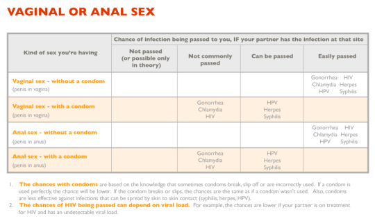
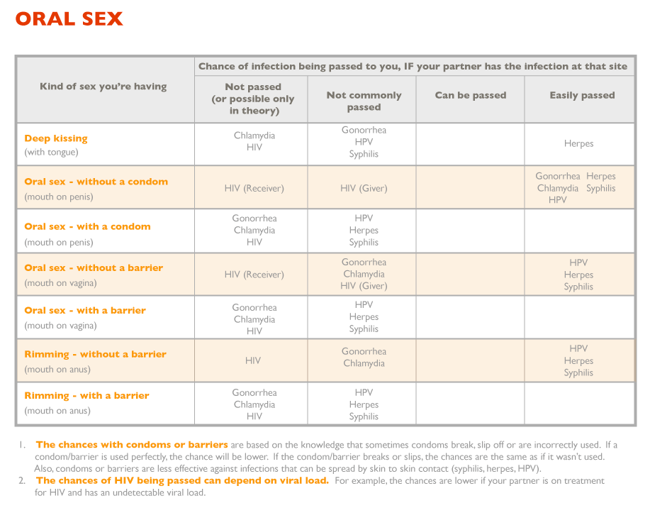
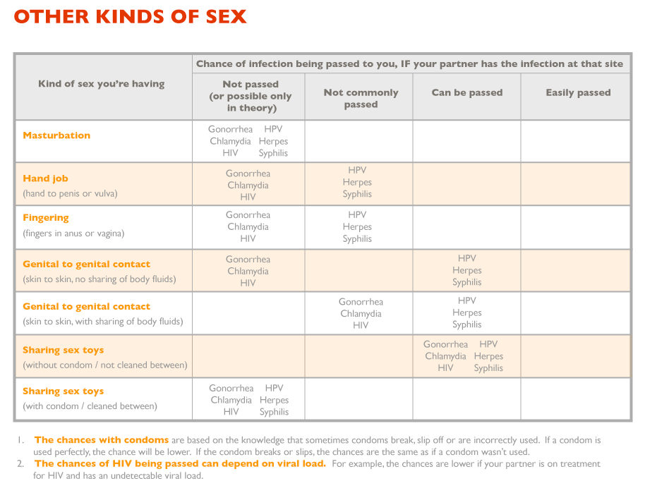

Sex Education
Let's start this off with a disclaimer: this is not a site advocating for celibacy. Too often we tell kids that the only way to be 100% safe from diseases and pregnancy, which is technically true. But I believe that it is an archaic notion to attempt, often quite miserably, to deny a very innate instinct found in nearly everybody. Sexual urges are as natural a part of life as puberty or even our digestive process. It is simply a reality and to actively suppress it in young adults for your own moral hang-ups is unfair. Then to take it a step further and make these teenagers feel guilty or dirty, and leave them uneducated is downright abusive. Let's all be honest here, they're doing it anyway. How quickly we forget the burning hot urgency of being 14 and in love. How quickly we forget sneaking around our parents' gaze to make out after school… How easily we say yes in the hopes that you can truly trust them. Somewhere in our 30s, as we begin to round a new curve in the cycle of life into a new phase, we develop an amnesia that only progresses with age. We cling to those heart breaks and stupid mistakes and try to pass those lessons along to the youth. Do you not remember how wrong your own parents were? How wrong the whole world was about your special person? How you were going to be together forever? Do you remember your own inability to listen to reason, or any perspective to far from your own? Do you not remember the golden age of knowing it all? Then let's think critically instead of blaming critically. Couple this sentiment with the fact that rates of teen pregnancy only continue to escalate and I feel as though it's obvious that something isn't working. I believe we should create an environment where sex is not a criminal act. I hope for a society where we are mature enough to understand and value sex enough to not use it as a weapon, impetuously, or to fill the empty static in our lives. And I believe proper sex education is one of the first steps to such a hope being a reality.
Another unpopular opinion of mine, but a piece of advice I urge you to at least consider, is on the topic of pregnancy. If you find yourself or partner with an unexpected and unwanted pregnancy weight every option equally. Come to a sound and objective decision from careful deliberation, not fear. Do not push your ideals into the debate. Do not decide in selfishness, but fairness. With that being said, if you are unable to care for a child, if child bearing puts risk on your health, if you are a victim of rape please consider abortion. No matter what religion you adhere to, or whatever moral qualms you have, or how much guilt it might give you, if you cannot care for a child mentally, emotionally, physically, or financially then you shouldn't be raising that child. Yes, never being born can be a better decision for the child than being born and not being able to be taken care of by parents and/or system. Consider adoption, though please try to find a family to make an arrangement for the adoption. Putting a child in the system is its own systematic and compound problem. Do not disregard the idea of adoption because carrying the child to term would be embarrassing for you, or because you don't want to gain wait. Those are quite poor excuses not to face the consequences of your actions. Consider an LGBT family. Again, no matter what you feel about it, make an objective decision in the child's best interest. Do not rush this decision!
Sexually Transmitted Diseases
Below is a diagraph to help with common misconceptions and confusions around STDs. It can be a taboo and embarrassing to even talk about, let alone go get checked for or have. But, it's important to always get checked. Do it every six months, even when you are faithful to only one partner. Practice safe sex. Understand that you can only control yourself, and no matter how much you love someone a disease won't lie. STDs can exibit little to no symptoms, so not feeling funny or burning sensations or not having visible bumps etc. is no reason not to get checked. Always have condoms of your own, do not rely on a sexual partner to have them. It's uncomfortable to stand with them in the checkout line or test for them at the doctor. But, it's not nearly as uncomfortable as having them. And if you do contract a disease, don't panic. It's not the end of the world. In fact, chlamydia is one of the most common STDs with millions upon millions of cases per year. Though this number should definitely not be this high, you are not alone. Drop your pride and handle your business: go to the doctor and alert your past partners. It’s an uncomfortable situation and it sucks. But such is life and you have to be responsible.
   Back to Top